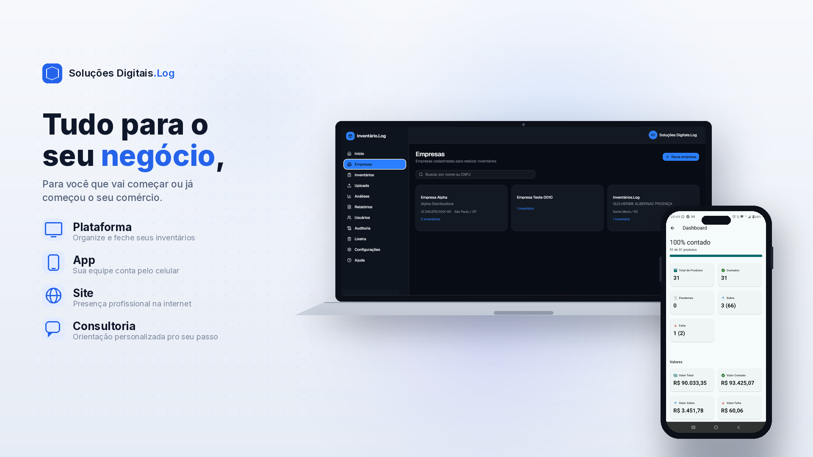

Tudo para o seu negócio
Quatro frentes que trabalham como uma coisa só. O app Inventário.Log é um produto desse ecossistema — não o sistema todo.
A central que recebe as contagens da equipe, cruza os dados, aponta divergências e fecha o inventário com relatórios prontos.
Ver apresentação completa → AppLeitura por código de barras e progresso em tempo real — sua equipe conta o estoque direto pelo celular, sincronizado com a plataforma.
Ver apresentação completa → SitePresença profissional na internet, no mesmo padrão deste site — feito sob medida para o seu negócio.
Falar sobre um site → ConsultoriaOnboarding, cadastro do estoque e acompanhamento presencial no primeiro inventário — orientação personalizada para o seu passo.
Ver apresentação completa →Emissor de Etiquetas → ferramenta gratuita do ecossistema para imprimir etiquetas com código de barras
O problema que resolvemos
Acuracidade de estoque é a distância entre o que o sistema diz que existe e o que realmente está na prateleira. Essa distância costuma ser maior do que parece — e o projeto quase nunca morre por causa do software, e sim pelo começo: ninguém senta para cadastrar o estoque direito nem acompanha a primeira contagem até o fim.
Conta pra gente o tamanho da operação e o que você precisa — plataforma, app, site ou consultoria.